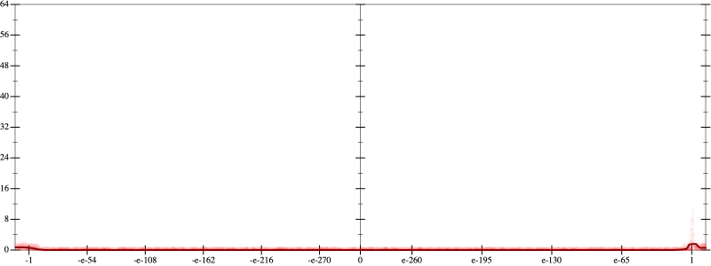
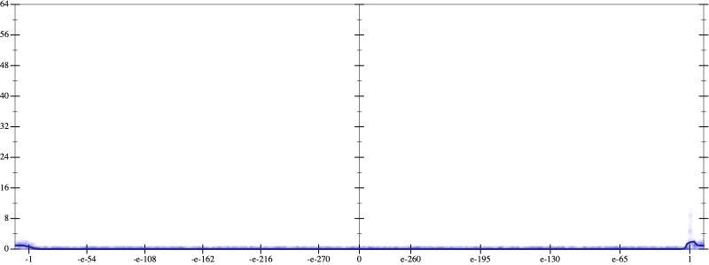
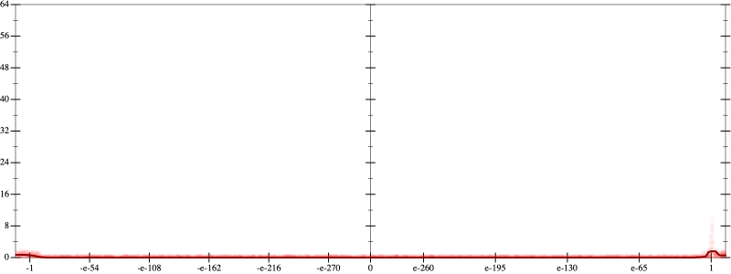
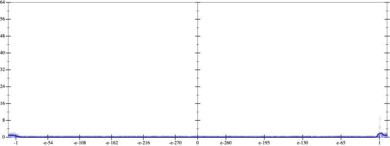

Initial program 0.1
\[\left(\left(\left(\left(\left(\left(\left(\left(1.0 + -10.0 \cdot x\right) + 22.5 \cdot \left(x \cdot x\right)\right) + -20.0 \cdot \left(\left(x \cdot x\right) \cdot x\right)\right) + 8.75 \cdot \left(\left(\left(x \cdot x\right) \cdot x\right) \cdot x\right)\right) + -2.1 \cdot \left(\left(\left(\left(x \cdot x\right) \cdot x\right) \cdot x\right) \cdot x\right)\right) + 0.291667 \cdot \left(\left(\left(\left(\left(x \cdot x\right) \cdot x\right) \cdot x\right) \cdot x\right) \cdot x\right)\right) + -0.02381 \cdot \left(\left(\left(\left(\left(\left(x \cdot x\right) \cdot x\right) \cdot x\right) \cdot x\right) \cdot x\right) \cdot x\right)\right) + 0.001116 \cdot \left(\left(\left(\left(\left(\left(\left(x \cdot x\right) \cdot x\right) \cdot x\right) \cdot x\right) \cdot x\right) \cdot x\right) \cdot x\right)\right) + -2.8 \cdot 10^{-05} \cdot \left(\left(\left(\left(\left(\left(\left(\left(x \cdot x\right) \cdot x\right) \cdot x\right) \cdot x\right) \cdot x\right) \cdot x\right) \cdot x\right) \cdot x\right)\]
Applied simplify0.1
\[\leadsto \color{blue}{\left(\left(\left(\left(x \cdot x\right) \cdot 0.291667\right) \cdot \left(\left(x \cdot x\right) \cdot \left(x \cdot x\right)\right) + \left(\left(x \cdot x\right) \cdot \left(x \cdot x\right)\right) \cdot \left(-2.1 \cdot x + 8.75\right)\right) + \left(\left(x \cdot -10.0 + 1.0\right) + \left(x \cdot x\right) \cdot \left(-20.0 \cdot x + 22.5\right)\right)\right) + \left(\left(\left(-0.02381 \cdot x\right) \cdot \left(x \cdot x\right)\right) \cdot \left(\left(x \cdot x\right) \cdot \left(x \cdot x\right)\right) + \left(\left(\left(x \cdot x\right) \cdot \left(x \cdot x\right)\right) \cdot \left(\left(x \cdot x\right) \cdot \left(x \cdot x\right)\right)\right) \cdot \left(-2.8 \cdot 10^{-05} \cdot x + 0.001116\right)\right)}\]
Taylor expanded around 0 0.1
\[\leadsto \left(\left(\left(\left(x \cdot x\right) \cdot 0.291667\right) \cdot \left(\left(x \cdot x\right) \cdot \left(x \cdot x\right)\right) + \left(\left(x \cdot x\right) \cdot \left(x \cdot x\right)\right) \cdot \left(-2.1 \cdot x + 8.75\right)\right) + \left(\left(x \cdot -10.0 + 1.0\right) + \color{blue}{\left(22.5 \cdot {x}^{2} - 20.0 \cdot {x}^{3}\right)}\right)\right) + \left(\left(\left(-0.02381 \cdot x\right) \cdot \left(x \cdot x\right)\right) \cdot \left(\left(x \cdot x\right) \cdot \left(x \cdot x\right)\right) + \left(\left(\left(x \cdot x\right) \cdot \left(x \cdot x\right)\right) \cdot \left(\left(x \cdot x\right) \cdot \left(x \cdot x\right)\right)\right) \cdot \left(-2.8 \cdot 10^{-05} \cdot x + 0.001116\right)\right)\]
Applied simplify0.1
\[\leadsto \color{blue}{\left(\left(\left(x \cdot x\right) \cdot \left(22.5 - 20.0 \cdot x\right) + -10.0 \cdot x\right) + \left(1.0 + {\left(x \cdot x\right)}^{\left(3 + 1\right)} \cdot \left(x \cdot -2.8 \cdot 10^{-05} + 0.001116\right)\right)\right) + \left(\left(x \cdot x\right) \cdot \left(x \cdot x\right)\right) \cdot \left(\left(\left(x \cdot 0.291667\right) \cdot x + \left(8.75 + x \cdot -2.1\right)\right) + \left(x \cdot x\right) \cdot \left(-0.02381 \cdot x\right)\right)}\]
- Using strategy
rm Applied sub-neg0.1
\[\leadsto \left(\left(\left(x \cdot x\right) \cdot \color{blue}{\left(22.5 + \left(-20.0 \cdot x\right)\right)} + -10.0 \cdot x\right) + \left(1.0 + {\left(x \cdot x\right)}^{\left(3 + 1\right)} \cdot \left(x \cdot -2.8 \cdot 10^{-05} + 0.001116\right)\right)\right) + \left(\left(x \cdot x\right) \cdot \left(x \cdot x\right)\right) \cdot \left(\left(\left(x \cdot 0.291667\right) \cdot x + \left(8.75 + x \cdot -2.1\right)\right) + \left(x \cdot x\right) \cdot \left(-0.02381 \cdot x\right)\right)\]
Applied distribute-lft-in0.1
\[\leadsto \left(\left(\color{blue}{\left(\left(x \cdot x\right) \cdot 22.5 + \left(x \cdot x\right) \cdot \left(-20.0 \cdot x\right)\right)} + -10.0 \cdot x\right) + \left(1.0 + {\left(x \cdot x\right)}^{\left(3 + 1\right)} \cdot \left(x \cdot -2.8 \cdot 10^{-05} + 0.001116\right)\right)\right) + \left(\left(x \cdot x\right) \cdot \left(x \cdot x\right)\right) \cdot \left(\left(\left(x \cdot 0.291667\right) \cdot x + \left(8.75 + x \cdot -2.1\right)\right) + \left(x \cdot x\right) \cdot \left(-0.02381 \cdot x\right)\right)\]
Applied simplify0.1
\[\leadsto \left(\left(\left(\left(x \cdot x\right) \cdot 22.5 + \color{blue}{\left(-20.0\right) \cdot {x}^{3}}\right) + -10.0 \cdot x\right) + \left(1.0 + {\left(x \cdot x\right)}^{\left(3 + 1\right)} \cdot \left(x \cdot -2.8 \cdot 10^{-05} + 0.001116\right)\right)\right) + \left(\left(x \cdot x\right) \cdot \left(x \cdot x\right)\right) \cdot \left(\left(\left(x \cdot 0.291667\right) \cdot x + \left(8.75 + x \cdot -2.1\right)\right) + \left(x \cdot x\right) \cdot \left(-0.02381 \cdot x\right)\right)\]
 
